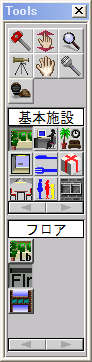
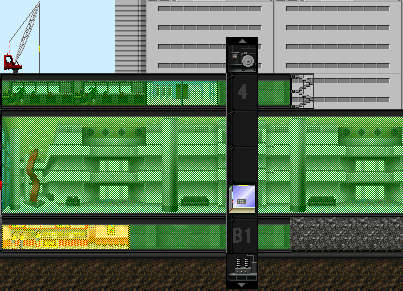

建築物の基礎部分なり、建築物全体の横幅を決定するアイテムです。
ツールパレット→基本施設アイコン→ロビーアイコン
建造物立てるにあたって地上１階には必ずロビーを設置しなければなりません。またロビーをそれ以外の階に設置することはできません。 マップによっては２回吹き抜けロビー、３回吹き抜けロビーなどが設定されている場合があります。２階吹き抜けロビーの場合、ロビー以外のアイテム を設置できるのは地上３階以上、３回吹き抜けロビーの場合は４階以上にロビー以外のアイテムを設置することが可能になります。
必ずロビーは１つでなければいけません。仮にすでに設置されているロビーから離れた場所にロビーを設置しても、その間は全てロビーで埋められます。 １つのウインドウの中に２つ以上の建造物を建てることはできません。ただし、ロビー階の上で建物が分岐して行く構造（ツインタワー）にすることは可能です。
アイテムとロビーは必ず移動設備で接続してください。マップのグレードによっては地下鉄や船着場からも住人が訪れますが、 大部分はロビーから訪れます。いつまでたっても住人が訪れないアイテムがあったら、まず集客範囲表示ツールそのアイテムをクリック してください。ロビーが緑色に網掛けされない場合には、そのアイテムはロビーに移動設備でつながっていません。至急移動設備の設置を 行ってください。（ただし、自動販売機など建造物内の住人しか利用しないアイテムは除きます。）